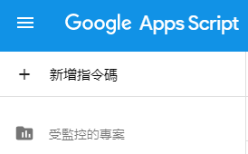
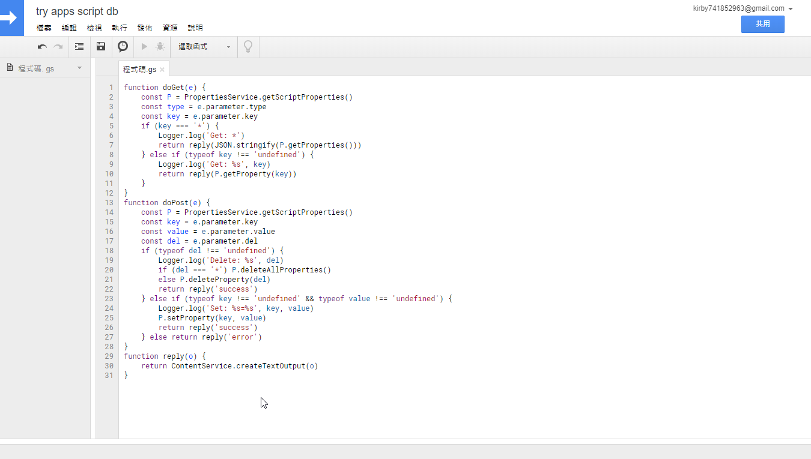
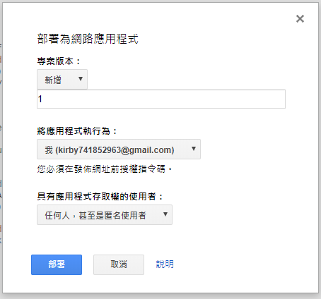
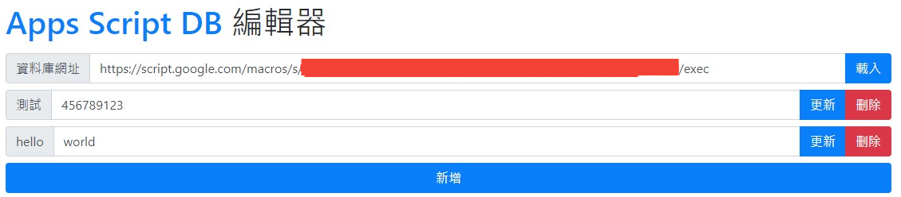

Apps Script 是 Google 所提供的免費服務之一
可以在上面執行 javascript 的子集與 Google 的去操作一些服務(ex: 雲端硬碟、試算表)
而他也支援使用 httphook ，可以在收到某些 request 時做出某些操作
而 maple3142/apps-script-db 就是使用它的一些功能來實現 key=>value 的資料庫的小 library
建立資料庫
建立第一個腳本
到 Apps Script 官網 上登入你的 Google 帳號，按下右上角的新增指令碼

接下來把 db.js 裡面的內容複製到剛剛建立的新腳本中
然後點右上角的 檔案->儲存，或是直接按下 Ctrl+S 來儲存檔案，然後輸入任何能夠辨識的名稱

應該要看到這樣
發佈
接下來按上方選單的 發佈->部屬為網路應用程式
然後在 專案版本 中輸入任何東西
以及把 具有應用程式存取權的使用者 改成 任何人，甚至是匿名使用者

然後按下確定之後會得到一個網址，這個網址就是你的資料庫位置
網址應該長的像下面這樣
1 | https://script.google.com/macros/s/隨機字串/exec |
使用方法
目前這個專案也只有 javascript 的 api 能呼叫，不過實際上用任何能發送 http request 的語言都能操作資料庫
建議參考 index.js 裡面的內容
真的很簡單，不到 50 行
UI 編輯器
到 https://maple3142.github.io/apps-script-db/ 能看到一個頁面
在 資料庫網址 的欄位填上剛剛得到的資料庫網址，並按下 載入
然後可以新增一些 key 值與更新一些 value

而這個編輯器的原始碼在這個專案的 webui branch
node.js
1 | npm i --save apps-script-db |
1 | const ADB = require('apps-script-db') |
因為這是使用 fetch 去發送請求的，所以需要自己提供 fetch 的 polyfill
不內建是因為為了減少瀏覽器打包的問題
瀏覽器
1 | <script src="https://unpkg.com/apps-script-db"></script> |
在瀏覽器端能直接從 cdn 上引用
不過也可以用 webpack 之類的東西來 require (一樣不需要手動提供 fetch)